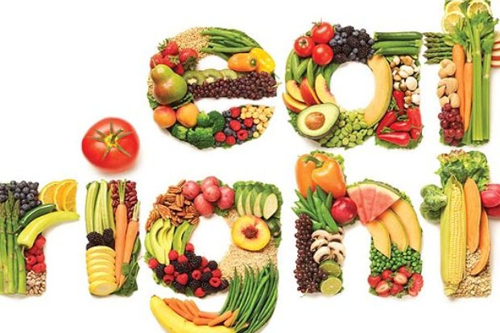
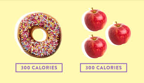
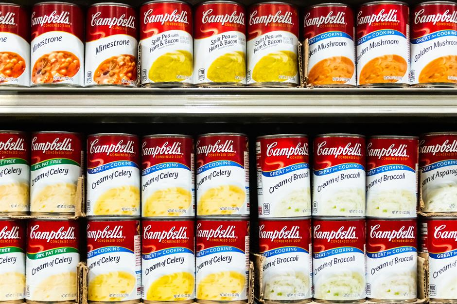
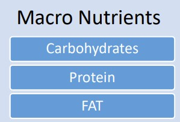
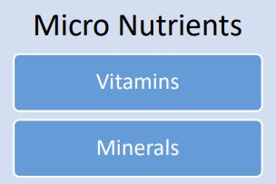

We always heard about having complete food for health and nourishment.
Herewith, is a summary to understand main constituents of food.
A nutrient is a substance used by an organism to survive, grow, and reproduce.
Nutrients are compounds in foods essential to life and health, providing us with energy, the building blocks for repair and growth and substances necessary to regulate chemical processes.

Another term we come across in this journey is ‘Essential Nutrients’.
Essential Nutrients are nutrients that are required for normal physiological (body function) and cannot be created by body, and these are required for survival. So, these need to be part of the dietary intake.
Following are essential nutrients for humans.
• 9 Amino Acids (Protein)
• 2 Fatty Acids (FAT)
• 13 Vitamins
• 16 Minerals
• Water
While these essential, but can turn out to be toxic if consumed beyond the recommended quantities.
Classification Of Nutrients:
×
Carbohydrates
Carbohydrates are your body's main source of energy: They help fuel your brain, kidneys, heart muscles, and central nervous system.For instance, fiber is a carbohydrate that aids in digestion, helps you feel full, and keeps blood cholesterol levels in check. Your body can store extra carbohydrates in your muscles and liver for use when you're not getting enough carbohydrates in your diet. A carbohydrate-deficient diet may cause headaches, fatigue, weakness, difficulty concentrating, nausea, constipation, bad breath and vitamin and mineral deficiencies.
Humans can’t survive without all nine essential amino acids. Protein is essential to building bones,and body tissues, such as muscles, but protein does much more than that. Protein participates in practically every process of a cell. It plays a part in metabolic reactions, immune response, protein provides a source of energy, assists in cellular repair, form blood cells, and more.
Fats allow humans and animals to consume fat-soluble vitamins and provide them with essential fatty acids, that is, those indispensable fatty acids that their bodies are unable to synthesize themselves. The efficiency of fat as foodstuff is very high, because the fat contained in food is almost completely reabsorbed by the body. Fats also provide a smooth, creamy consistency to many dishes, which translates into a good mouth-feel.
Vitamins don't provide energy, like carbohydrates, proteins and fats, but they are essential compounds that help the body grow and function optimally. Thirteen essential vitamins help boost your immunity, strengthen your bones, heal wounds, bolster your eyesight and assist you in obtaining energy from food -- among multiple other functions. Without adequate vitamin intake, you may feel lethargic, be vulnerable to infection and develop other serious complications that can endanger your health and life.
Minerals are important basic building blocks for proper nutrition and health. Without them, other nutrients are unable to function properly. Amino acids and enzymes don’t function as well as they should, resulting in other nutrients not breaking down enough to be properly absorbed. The end result; serious vitamin and mineral deficiencies. Minerals create a healthy environment in which the body, using vitamins, proteins, carbohydrates, and fats, can grow, function, and heal itself. They are quite different from vitamins in their structure and the work they do, but the two enjoy an excellent working relationship.
sources:
meat,cereals,fish,milk and dairy foods,fruit and vegetables,nuts,etc.
×
Water
All plants and animals need water to survive. There can be no life on earth without water. Why is water so important? Because 60 percent of our body weight is made up of water. Our bodies use water in all the cells, organs, and tissues, to help regulate body temperature and maintain other bodily functions. Because our bodies lose water through breathing, sweating, and digestion, it's crucial to rehydrate and replace water by drinking fluids and eating foods that contain water.Water also helps in creating saliva,regulating body temperature,protects tissues and spinal chord,helps in excretion,etc.
sources:
fruits,mineral water,cold/soft drinks,etc.
Calorie:
The food we take is finally converted into energy. Calorie is amount of energy (heat) it
takes to raise temperature of 1 gm of water by 1 degree Celsius.
We need to understand the calories a food item generates, to decide the quantity to
be consumed.

Understanding nutrients on packaged food:
We see RNI/RDI/GDA as labelled on the packaged food along with the micro/macro nutrients.
• RNI: Recommended Nutrient Intake
• RDI: Recommended Daily Allowance
• GDA: Gross Daily Allowance
Though these are used by different products/brands but mean the same. This is to tell - by consuming one serving of the packet (or as mentioned in the package), how much of recommended daily intake is fulfilled.
The quantities are mentioned in terms of units - gm (grams), mg (milligram) or mcg/micro symbol (micro grams).

Micro And Macro Nutrients


macro-nutrients are required in large quantities while micro-nutrients are required in small quantities
To start the journey of healthy living, we should ensure that above nutrients are in the
required quantities for the age and lifestyle in the food we consume.
Body Mass Index(BMI):
Body Mass Index (BMI) is a person’s weight in kilograms divided by the square of height in meters. A high BMI can be an indicator of high body fatness. BMI can be used to screen for weight categories that may lead to health problems but it is not diagnostic of the body fatness or health of an individual.
Waist circumference:
Measuring waist circumference helps to screen possible health risks that come with
overweight and obesity. This risk goes up with a waist size that is greater than 35 inches
for women or greater than 40 inches for men. click here for more info